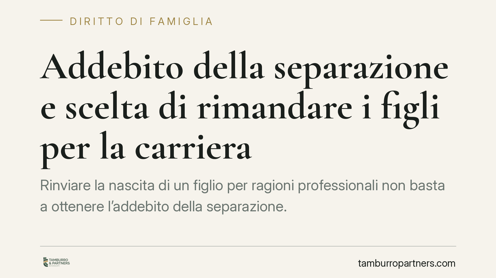

Addebito della separazione e scelta di rimandare i figli per la carriera
Rinviare la nascita di un figlio per ragioni professionali non basta a ottenere l'addebito della separazione. Serve la violazione di un dovere coniugale e il nesso con l'intollerabilità della convivenza. Chiariamo cosa deve provare chi chiede l'addebito e come si difende chi lo subisce, con le conseguenze economiche e successorie che ne derivano.

Il fatto
Una scelta ricorrente nelle coppie: rimandare la genitorialità per consolidare un percorso professionale. Quando la relazione entra in crisi, capita che l'altro coniuge tenti di trasformare quella decisione in una colpa, chiedendo l'addebito della separazione.
La questione è delicata perché tocca un ambito in cui la libertà personale è ampia. La giurisprudenza di legittimità, in orientamento ormai consolidato, ha escluso che la scelta di posticipare la maternità o la paternità per motivi di lavoro costituisca, di per sé, causa di addebito. Vediamo perché.
Inquadramento normativo
L'addebito è disciplinato dall'art. 151, secondo comma, del Codice civile. Il giudice, su richiesta di una parte, può dichiarare a quale dei coniugi sia addebitabile la separazione, quando ne ricorrano i presupposti.
Quei presupposti sono due e devono coesistere:
- la violazione di uno dei doveri coniugali elencati dall'art. 143 c.c. (fedeltà, assistenza morale e materiale, collaborazione, coabitazione, contribuzione ai bisogni della famiglia);
- il nesso causale tra quella violazione e l'intollerabilità della convivenza.
Non basta, quindi, un comportamento astrattamente censurabile. Occorre dimostrare che proprio quella condotta abbia reso impossibile proseguire la vita comune. Se la crisi coniugale era già in atto per altre ragioni, l'addebito non regge, perché manca il legame causale.
La decisione di rinviare i figli per la carriera non integra, di norma, alcuna violazione dei doveri dell'art. 143 c.c.: il progetto genitoriale rientra nella sfera delle scelte condivise o comunque negoziabili tra i coniugi, non in un obbligo giuridico. Diverso è il caso in cui quella scelta venga imposta con inganno, o si accompagni a condotte che ledono l'assistenza morale o la fedeltà: allora rileva il comportamento complessivo, non il rinvio in sé.
Implicazioni pratiche
La lettura va fatta da due lati speculari.
Chi chiede l'addebito deve mettere in conto un onere probatorio pesante. Non è sufficiente affermare che l'altro abbia privilegiato il lavoro alla famiglia. Bisogna individuare una specifica violazione di un dovere coniugale e provare che sia stata questa a determinare la rottura. In assenza, la domanda viene respinta e le spese processuali possono ricadere su chi l'ha proposta senza fondamento.
Chi subisce la domanda ha spazio difensivo ampio: può dimostrare che la scelta professionale era condivisa, o che la crisi aveva origine anteriore e diversa. La ricostruzione cronologica dei fatti è spesso decisiva.
Le conseguenze dell'addebito, quando viene pronunciato, sono concrete e patrimoniali:
- sul piano del mantenimento, il coniuge cui la separazione è addebitata perde il diritto all'assegno di mantenimento e conserva, se ne ricorrono i presupposti, solo il diritto agli alimenti (art. 156 c.c.);
- sul piano successorio, il coniuge separato con addebito è escluso dai diritti successori nei confronti dell'altro, salvo il diritto a un assegno vitalizio se al momento dell'apertura della successione godeva degli alimenti (art. 548 c.c.).
È importante tenere distinto l'addebito dalle questioni sull'affidamento dei figli. L'addebito riguarda la responsabilità nella rottura del rapporto tra coniugi; l'affidamento e il collocamento seguono criteri autonomi, orientati esclusivamente all'interesse del minore. Aver rimandato la genitorialità non incide sulla capacità genitoriale una volta che i figli siano nati.
Cosa fare in concreto
- Ricostruisci la cronologia della crisi: individua il momento e la causa reale della rottura, distinguendola da scelte pregresse condivise.
- Raccogli prove documentali (messaggi, testimonianze, atti) che dimostrino la condivisione o la contestazione della scelta sui figli.
- Verifica i due presupposti dell'addebito prima di agire: violazione di un dovere ex art. 143 c.c. e nesso causale con l'intollerabilità.
- Valuta l'impatto economico dell'addebito su mantenimento (art. 156 c.c.) e successione (art. 548 c.c.), che sono la vera posta in gioco.
- Separa i piani: non confondere la domanda di addebito con le richieste su affidamento e collocamento dei figli, che rispondono a criteri diversi.
È opportuno ponderare costi processuali e benefici economici prima di introdurre la domanda: l'addebito ha effetti reali solo se incide su mantenimento o successione, e va richiesto quando gli elementi probatori lo sostengono.
---
Contributo informativo a cura di Tamburro & Partners Avvocati. Non costituisce parere legale.
Ogni famiglia ha il suo equilibrio.
Separazione, divorzio, affidamento, assegno: se vuoi un confronto riservato su una specifica situazione, scrivi allo studio. Ti rispondiamo entro un giorno lavorativo.